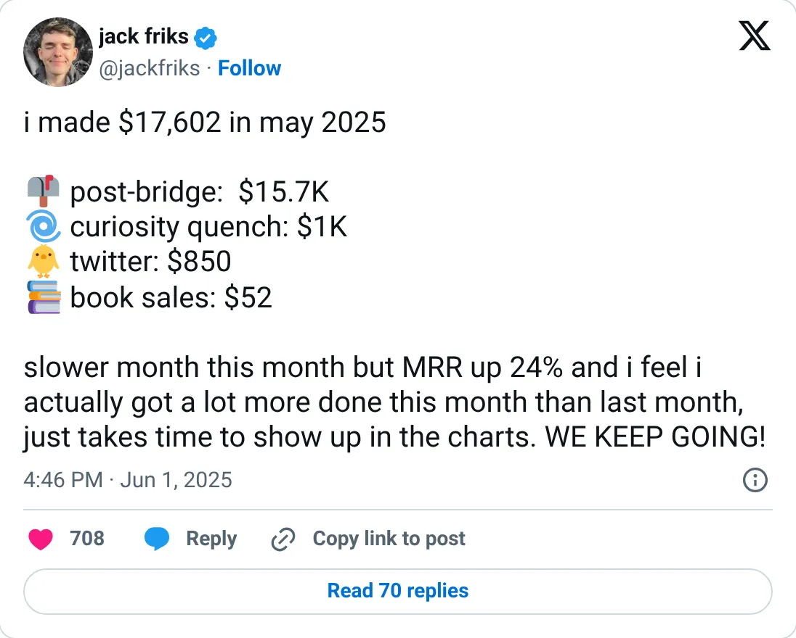
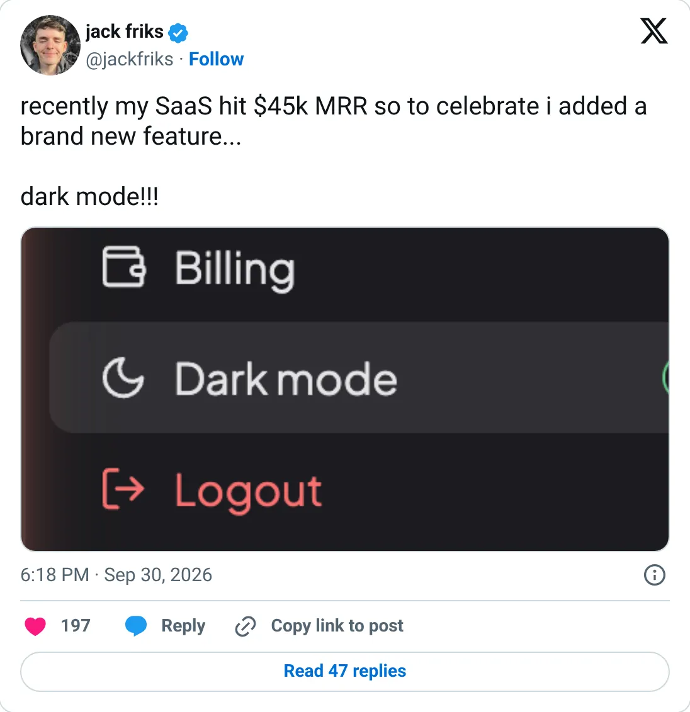

Not a pick
Post Bridge
The ledger looks real. It is not one of the clearer things to start next.
$48,865 MRR
Should you build this
The money looks real, and it is still not a recommendation to start a copy. Post Bridge is listed at $48,865 MRR, taken from TrustMRR on 2026-10-08. 5 recorded months sit under the headline, and they are processor totals. This is current billing on a connected Stripe, Paddle, Polar, or Dodo account. It does not certify margins, churn, or that every tweet around it is careful.
Cited from the captured posts, shown below: the earliest captured post (Jun 1, 2025) is the source for “May 2025: $15.7K (+24%)”; the latest milestone (Sep 30, 2026) is the source for “"My SaaS hit $45K MRR"”.
Posts this is based on

May 2025: $15.7K (+24%)
Open on X

"My SaaS hit $45K MRR"
Open on X
What the product is
Post your content to every social platform (TikTok, Instagram, YouTube, X…) at once from a single place.